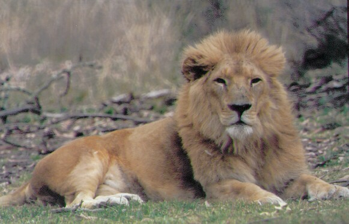

|  | Rendszertani hely: osztály: emlősök (Mammalia); rend:
ragadozók (Carnivora); család: macskafélék (Felidae)
Leírás: az oroszlán a tigrisnél valamivel kisebb, de azért elég nagytermetű macskaféle. Testhossza 1,7 m, a nőstények ennél gyakorta kisebbek, farokhossza 90-100 cm, testtömege pedig mintegy 180-200 kg. Testének alapszíne sárgásbarna, de a fiatal állatokon halvány foltok figyelhetők meg, amelyek látványos módon néha felnőtt korban is megmaradnak. A hímek sörényt viselnek, amelynek színe és mérete területenként és egyedenként is nagyon eltérő lehet. Néha akadnak gyér sörényű, sőt csaknem teljesen sörénytelen hímek is, de akadnak dús, bozontos sörényű egyedek is. A sörény színe sárgásbarna vagy akár sötétbarna, fekete is lehet.
Elterjedés, élőhely: az oroszlán egykor nemcsak Afrikában fordult elő, hanem Ázsiában is. Az ázsiai populációk azonban már az ókori mezopotámiai civilizációk virágzása idején megfogyatkoztak, mára pedig szinte mindenhol kipusztultak. Ázsiában ma már csak a nyugat-indiai Gir erdő védett területén élnek oroszlánok. Afrikában ma még nem ilyen katasztrofális az oroszlánok helyzete, de az kétségtelen, hogy az elmúlt évszázadokban sok olyan területről végleg eltűntek az oroszlánok, ahol pedig korábban meglehetősen gyakoriak voltak. A különböző populációk olykor igen eltérő körülményekhez alkalmazkodtak, s amíg egyes oroszlánok a füves szavannákon érzik otthon magukat, mások a sűrűbb, bozótos területeket kedvelik, megint mások a félsivatagos, sziklás vidékeket részesítik előnyben. A mára kiirtott berber oroszlán (Panthera leo leo) például az Atlasz-hegység vidékén élt.
Tovább |